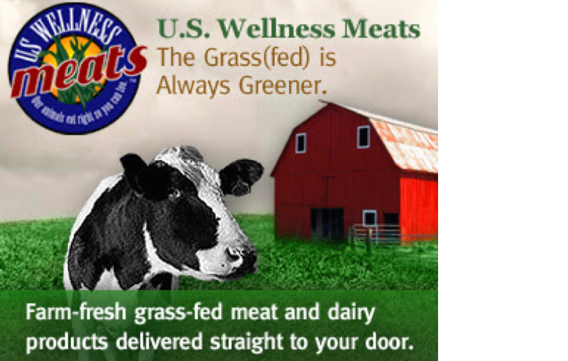

Online Markets
Thrive Market
Image from blog.claritycoverdalefury.com
Thrive Market is the place I get all my staples from, from rice and beans, to snacks, cosmetics and cleaning products. The online shop combines the wholesale prices of Costco, convenience of Amazon/Amazon Prime and your local organic store. Even though I wouldn't buy every single product they are offering, all products are considered "healthy" and could fit into any kind of diet, ranging from Paleo to Vegan.
US Wellness Meats
Image from healinggourmet.com
US Wellness meats is an online store that delivers perishable products to your doorstep. Don't get misled by the title, as the website not only delivers meat, but also wild-caught seafood, grass-fed dairy, healthy snacks, produce and even pet food. All meat is grass-fed, not fed with antibiotics and not given any kind of hormones. As natures as it can get! It is daunting that you need to buy in bulk for the best price, but if you practice meal planning and use your freezer efficiently, you should be fine!
Wise Choice Market
Image from wisechoicemarket.com
Wise Choice Market is another great online option if you want your food delivered. Besides seafood and chesses, on the website you will find cooked meals which are delivered frozen. You can get wonderful soups, bone broth )which actually takes a lot of time to prepare at home, fermented vegetables such as sauerkraut, pickles and kimchi, wild salmon caviar and soaked cereals.
Individual Products
Sprouted Nut Butters
Image from radiantlifecatalog.com
Through soaking and sprouting, the digestibility and nutritional value of nuts and seeds improves drastically. This is why I recommend these nut butters, made of 100% sprouted seeds and nuts. You can order them here.
Gelatin
Image from vitalproteins.com
Through soaking and sprouting, the digestibility and nutritional value of nuts and seeds improves drastically. This is why I recommend these nut butters, made of 100% sprouted seeds and nuts. You can order them here.
Tignernuts And Tigernut Flour
Image from organicgemini.com
Tigernuts contain resistant starch which is proven to be a prebiotic and be beneficial to gut flora. Even though it is called a tigernut, tigernuts are not nuts, but rather tubers. Some people consume them raw, while others grind them into flour to bake with. The company "Organic Gemini" is the only USDA-Organic cetified tiger nut company in the USA. You can order them here.